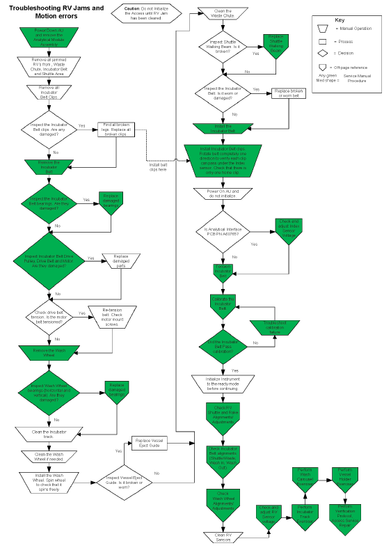

Tshoot: RV Jams and Incubator Belt Motion Errors
Summary
This document provides information for support personnel to troubleshoot RV jams and incubator belt motion errors.
Troubleshooting Flow Chart
Use this flowchart to identify root causes of failure and check analytical module hardware.
Troubleshooting RV Jams Motion Errors.pdf

Service Manual Procedures
This table provides a list of service manual procedures shown in the flow chart.
| To | Refer to this document |
|---|---|
| Remove the analytical module | Removing Analytical Module |
| Remove the incubator belt | Replacing Incubator Belt |
| Inspect the incubator belt bearings | Replacing Incubator Belt Bearings |
| Inspect the incubator belt drive pulley, drive belt, and motor | |
| Replace damaged incubator belt bearings | |
| Inspect wash wheel bearings | Replacing Wash Carousel Bearings |
| Replace damaged wash wheel bearings | |
| Install a new shuttle walking beam | Disassembling and Reassembling RV Shuttle |
| Install the incubator belt | Replacing Incubator Belt |
| Tension the incubator belt | |
| Install incubator belt clips | |
| Adjust the index sensor | Adjusting Incubator Belt Index Sensor |
| Calibrate the incubator belt | Calibrating Incubator Belt |
| Check shuttle and rake adjustments | Aligning RV Shuttle and Rake |
| Check incubator belt alignments | Aligning Incubator Belt |
| Check wash carousel alignments | Aligning Wash Carousel |
| RV Sensor Adjustment | Adjusting RV Sensors |
| Exercise the incubator track | System Exerciser Routines Theory of Operation |
| Exercise the wash carousel | |
| Exercise the vessel holder | |
| Perform verification protocol | Instrument Verification Protocol for Access Service Repair |